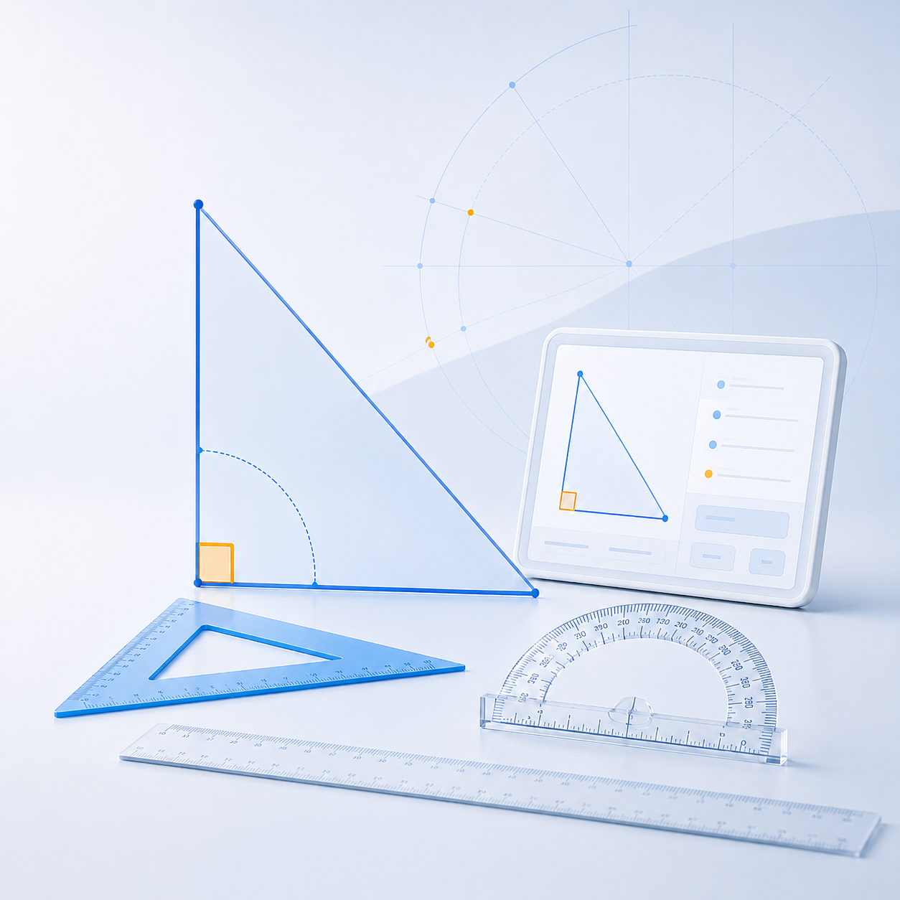
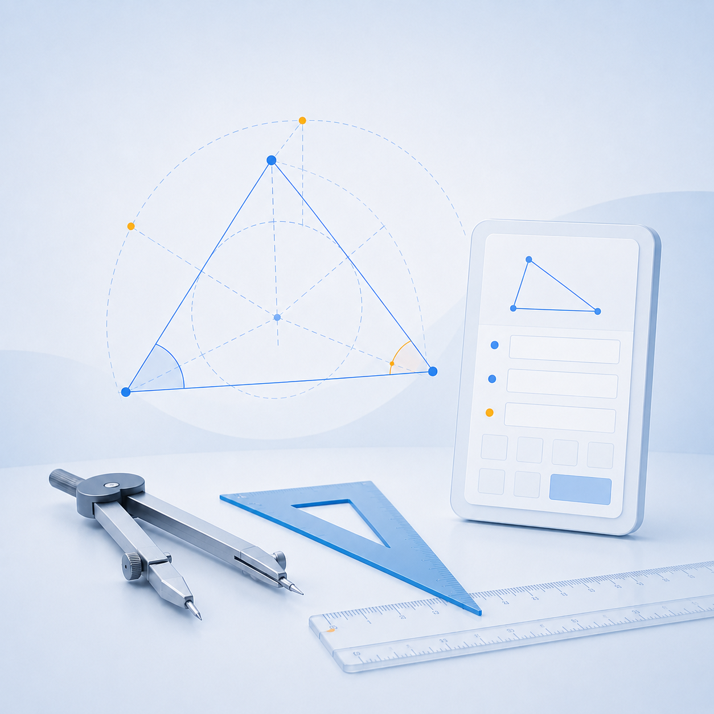

Rechtwinklig
Der Standardfall: Du brauchst 2 Werte. Ändere jeden beliebigen Wert, um Varianten direkt zu vergleichen.
Werkstatt-Geometrie
Interaktiver Geometrie-Helfer für Werkstatt, Zuschnitt, Konstruktion und Drehen. Werte eingeben – Berechnung und Zeichnung reagieren sofort.
Vorschau
Bedienung
Gib die beiden Durchmesser und die Kegellänge ein. Der Einstellwinkel entspricht Alpha / 2.
Schnell erklärt
Wähle den passenden Modus und gib nur die bekannten Maße ein.

Der Standardfall: Du brauchst 2 Werte. Ändere jeden beliebigen Wert, um Varianten direkt zu vergleichen.

Ohne rechten Winkel brauchst du 3 Werte, mindestens eine Seite. Die letzten drei Eingaben haben Vorrang.
Für die Drehbank: D, d und L eingeben, um Einstellwinkel und Kegelverhältnis zu erhalten.